柚子商城
- 基於SpringBoot、SpringCloud的大型分散式微服務架構B2C商城項目
- 項目由業務集群 + 後台管理系統構成，主要練習微服務架構、服務註冊與發現、遠程調用、網關、Restful接口、數據校驗、高併發處理、MQ訊息中心、限流降級、鏈路追蹤、性能監控、壓力測試等等
專案背景(Background)
- 本項目參考自 尚硅谷java微服務課程: https://www.bilibili.com/video/BV1np4y1C7Yf?p=342
- 個人學習過程的詳細筆記(共26篇): https://yoziming.github.io/post/220118-gulimall-01/
項目架構圖

解析
- 使用者通過任意客户端（app/Web）向伺服器發送請求，請求首先來到Nginx集群，Nginx將請求轉交給Api網關（SpringCloud Gateway）
- Api網關:
- 根據當前請求，動態路由到指定的服務
- 如果服務出現問題，也可以在網關通過Sentinel做熔斷降級與限流，例如超過負荷時暫時顯示排隊頁面，只放伺服器能乘載的輛
- Nacos註冊中心：微服務的註冊與發現
- Feign：微服務之間的遠程調用
- OAuth2.0認證中心：登入與請求權限的管理
- 快取：使用Redis結合spring cache與redsson分布式鎖
- 持久化：使用MySQL
- 消息隊列：使用Rabbit MQ實現微服務之間的非同步解耦，包括完成分佈式事務的最終一致性
- 全文檢索：使用Elastic Search實現
- 圖片存儲：使用MinIO存儲服務
- Sleuth + Zipkin：服務的可視化追蹤
- 其他運維部分暫時沒完成
服務模組
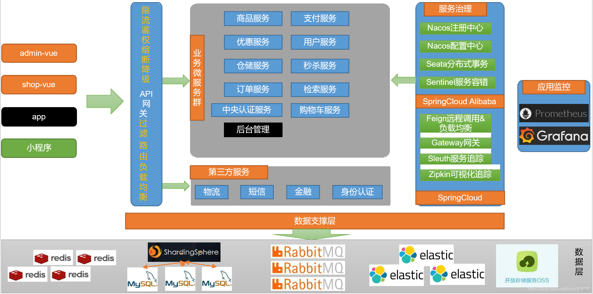
檔案結構
mall-parent
├── auth-server -- 登入認證中心
├── cart -- 購物車服務
├── common -- 工具類及通用程式碼
├── coupon -- 優惠服務
├── gateway -- 網關
├── member -- 會員服務
├── order -- 訂單服務
├── preset -- 啟動需要的前置工作(docker、sql語句等等)
├── product -- 商品服務
├── search -- 商品搜尋服務
├── seckill -- 秒殺優惠服務(高併發所以獨立出來)
├── third-party -- 第三方服務
├── ware -- 倉儲服務
├── renren-fast -- 後台管理系統
├── renren-generator -- 人人開源項目的代碼生成器
renren-fast-vue -- 後台管理系統
技術選型
後端技術
| 技術 | 説明 | 官網 |
|---|---|---|
| SpringBoot | 容器+MVC框架 | https://spring.io/projects/spring-boot |
| SpringCloud | 微服務架構 | https://spring.io/projects/spring-cloud |
| SpringCloudAlibaba | 一系列組件 | https://spring.io/projects/spring-cloud-alibaba |
| MyBatis-Plus | ORM框架 | https://mp.baomidou.com |
| renren-generator | 程式碼生成器 | https://gitee.com/renrenio/renren-generator |
| Elasticsearch | 搜索引擎 | https://github.com/elastic/elasticsearch |
| RabbitMQ | 消息隊列 | https://www.rabbitmq.com |
| Springsession | 分佈式緩存 | https://projects.spring.io/spring-session |
| Redisson | 分佈式鎖 | https://github.com/redisson/redisson |
| Docker | 容器引擎 | https://www.docker.com |
| MinIO | 圖片存儲 | https://min.io |
| sentinel + zipkin | 分布式限流 + 追蹤 | https://zipkin.io |
前端技術
| 技術 | 説明 | 官網 |
|---|---|---|
| Vue | 前端框架 | https://vuejs.org |
| Element | 前端UI框架 | https://element.eleme.io |
| thymeleaf | 模板引擎 | https://www.thymeleaf.org |
| node.js | 服務端的js | https://nodejs.org/en |
環境與版本(Version)
開發工具
| 工具 | 説明 | 官網 |
|---|---|---|
| IDEA | 開發Java | https://www.jetbrains.com/idea/download |
| Another Redis Desktop | redis連接 | https://github.com/qishibo/AnotherRedisDesktopManager |
| SwitchHosts | host切換 | https://oldj.github.io/SwitchHosts |
| Navicat | 資料庫連接 | http://www.formysql.com/xiazai.html |
| Postman | API接口測試 | https://www.postman.com |
| Jmeter | 性能壓測工具 | https://jmeter.apache.org |
| Typora | 筆記 | https://typora.io |
開發環境
| 工具 | 版本號 | 下載 |
|---|---|---|
| JDK | 1.8 | https://www.oracle.com/java/technologies/javase/javase-jdk8-downloads.html |
| Mysql | 5.7 | https://www.mysql.com |
| Redis | 6.0 | https://redis.io/download |
| Elasticsearch | 7.16.2 | https://www.elastic.co/downloads |
| RabbitMQ | 3.9.13 | http://www.rabbitmq.com/download.html |
| Nginx | 1.21.5 | http://nginx.org/en/download.html |
啟動前置
由於項目龐雜，啟動需要不少前置工作，大部分都使用docker運行
- 請參閱專案之下的preset資料夾，需要用到的都放在這邊了
網關部分
- 首先設定網關，參考 https://yoziming.github.io/post/220127-gulimall-10-stress-testing
- 這邊使用SwitchHosts模擬DNS的效果，在本地訪問mall.com就會被轉向虛擬linux機的ip，
- 該linux上運行了多個docker服務，其中使用nginx負責反向代理與回覆靜態資源(動靜分離)

- nginx將請求再轉回本機的spring cloud gateway服務，並且結合已經在nacos註冊好的各個微服務模組名稱，將請求正確的轉發到要去的地方
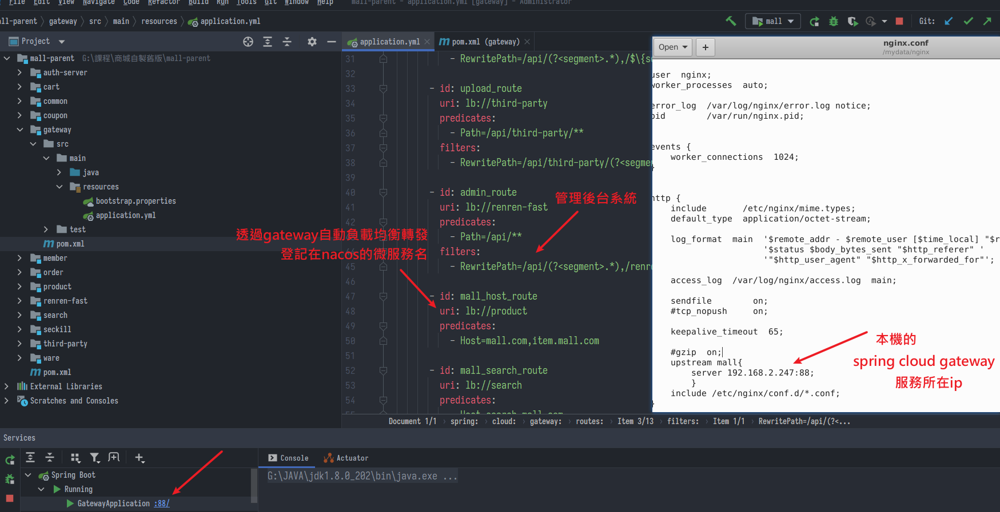
- 啟動的各個服務使用
@EnableDiscoveryClient都註冊到Nacos上
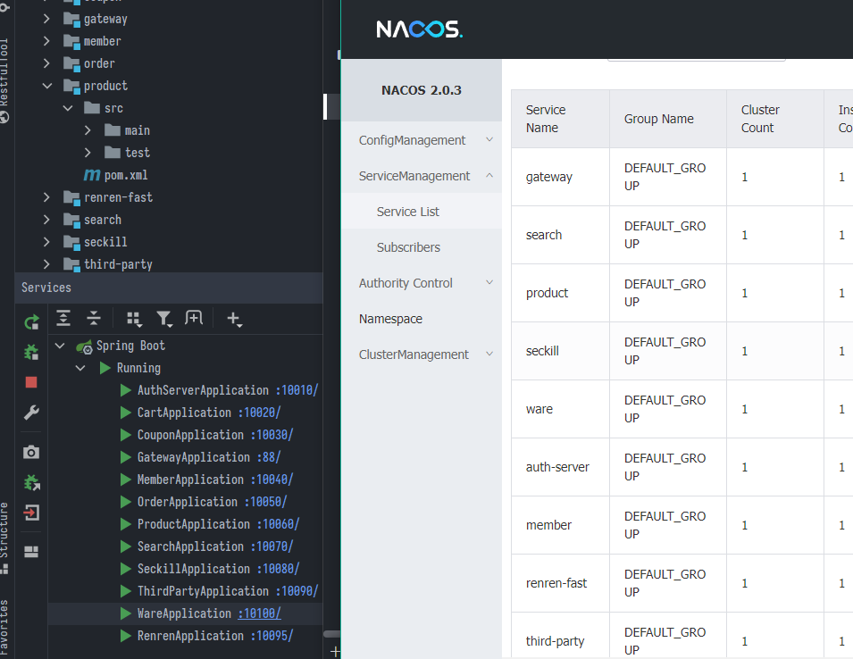
資料庫部分
- mysql參見資料夾，裡面有所需的建表資料，要注意的是原版教學文件中有不少錯字(例如商品種類的catelog)，我個人都把它修改過
- minIO啟動後一樣需要自己設定名稱與密碼，java程式運行起來發現如果沒有bucket會自動創建，但是還要去minIO dashboard手動修改bucket訪問權限(注意minIO的dashboard用的cookie與後台管理系統衝突，發現登入有問題需要手動刪cookie)
- ElasticSearch啟動後需要手動安裝中文分詞器，參考 https://yoziming.github.io/post/220125-gulimall-08-elasticsearch/
- 並且需要手動建立mappings，建表的JSON參見elasticsearch.txt
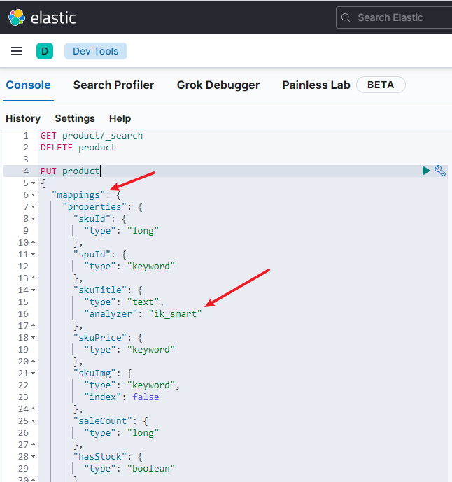
其他docker服務
- RabbitMQ、zipkin、Redis、Nacos用docker啟動，沒特別改的，預設模式就OK了
後台系統
- 後台系統基於renren-fast，是一個Vue框架構成的管理網站，使用
npm i安裝所需依賴，npm run dev啟動 - 當然在java端需要先啟動網關與renren-fast，才能驗證登入、獲取資料
- 遇到npm版本問題可以參考 https://yoziming.github.io/post/220121-npm-sass-webpack/
演示(Demo)
原本打算將服務部署到AWS的EC2主機上，因為使用Sleuth追蹤發現只要是feign調用的反應時間都特別長，所以弄了一個合併版本(從原本12個微服務合併成4個)
並且合併版本有比較滿意的外觀(原教學版本是扒京東JD.COM的皮，頁面非常雜亂)，合併版仿網易嚴選商城比較簡潔美觀，所以使用合併版作為展示
商城首頁
- 首先是三級商品分類，這個分類幾乎存在所有頁面
- 商城頁面使用thymeleaf渲染模板
- 由於包含大量資料，且讀多改少，以JSON形式存到redis cache中
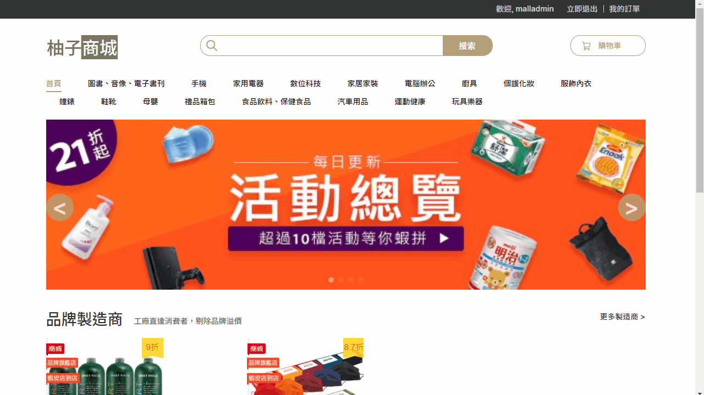
- 對應的後台管理與實際資料庫表單所在
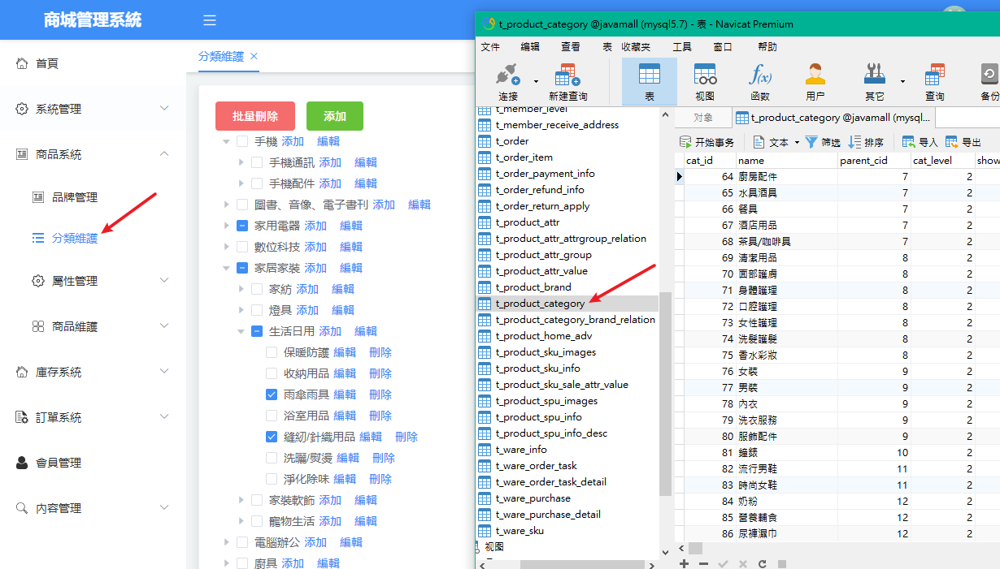
- 首頁輪播廣告也可以在後台控制
- 圖片上傳的部分，網頁是用element-ui 的 el-upload 元件發送檔案流給後端
- 後端串接的API接收MultipartFile，再上傳到MinIO中儲存，並返回圖片網址給前端
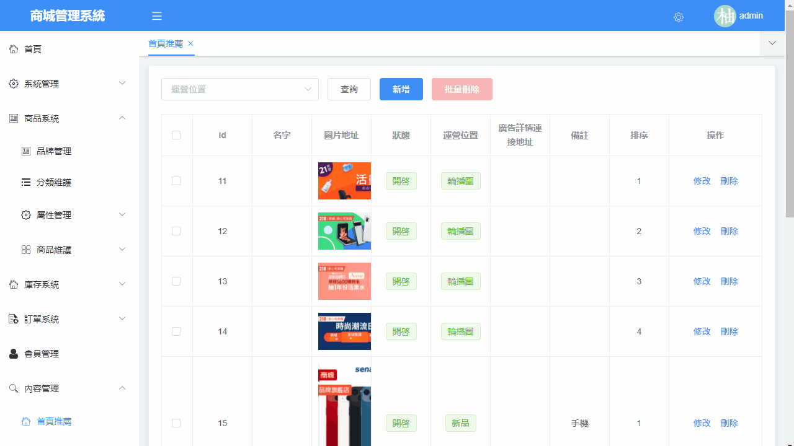
- 網站中其他上傳品牌圖片、商品圖片也都是透過這種方式
- 教學中上傳圖片使用的是pre signed預簽名的方法，省下前端傳圖片給後端server的流量，讓使用者直接把圖傳到雲端，我有嘗試使用AWS S3想達成類似的操作，但不是卡在CORS就是有access key洩漏的風險，只好暫時放棄而使用MinIO代替
商品屬性、品牌
- 品牌與關連的商品分類
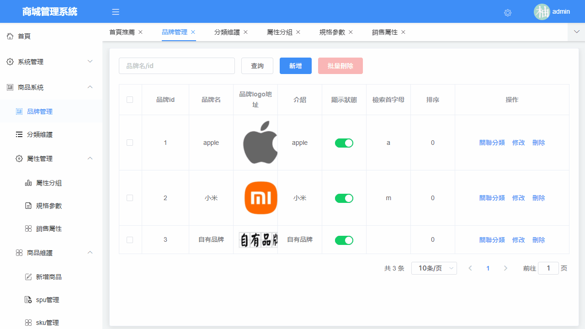
- 新增商品的SPU與SKU屬性與分組
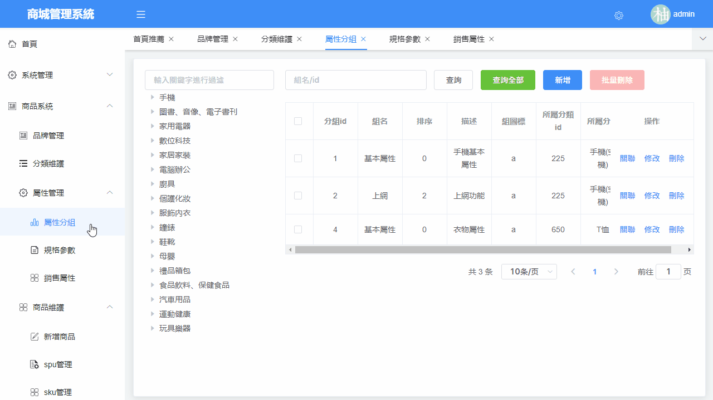
新增商品、庫存模組
- 新增商品的動態展示
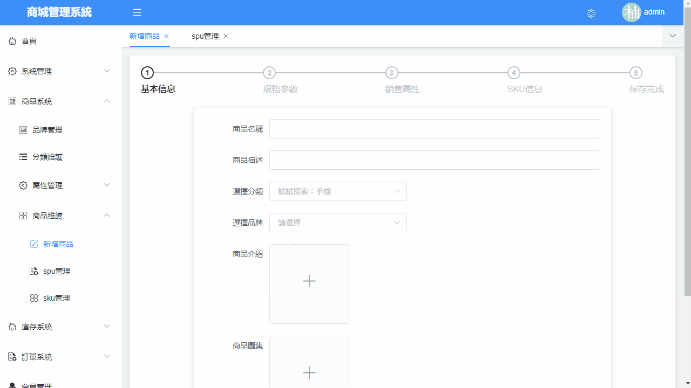
- 新增完商品後，可以在sku管理查看商品，並且快速找到對應的庫存訊息
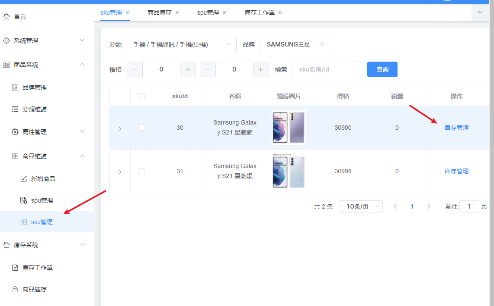
-
庫存模組就是一些新增採購單的功能，理論上還要做一個採購的模組，讓採購人員能夠領取採購單、回報採購情況等等，可能是做成一個app或是簡單的網頁，這邊暫時用postman假裝發送採購完成的訊息給串接的API
-
之後營運人員便可以在spu管理將商品上架
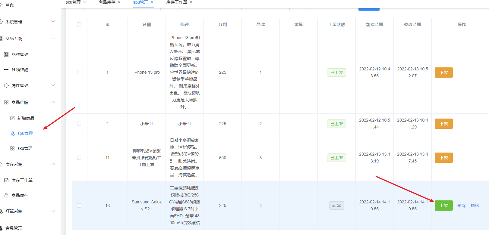
-
上架的同時，會將商品屬性等等關鍵字抽出到Elasticsearch，以便之後可以搜尋
商品搜尋
- 使用ElasticSearch實現，並且有Breadcrumb Trail與Highlight關鍵字，動態演示圖:
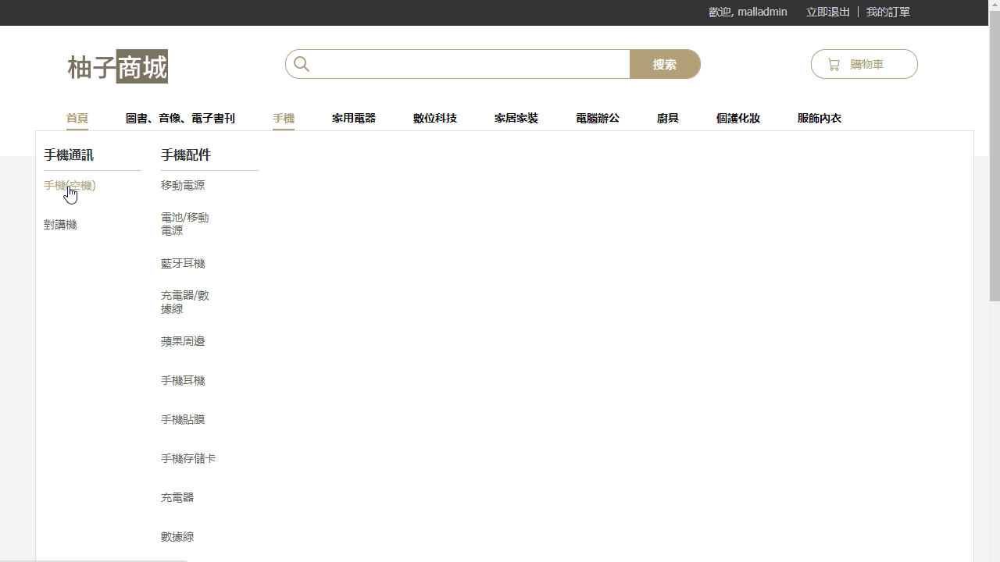
商品詳情與購物車
- 可以看到之前新增商品時填入的規格參數與商品詳情介紹

- 購物車的實現可以參考 https://yoziming.github.io/post/220203-gulimall-17-offline-cart
- 支付的部分可以參考 https://yoziming.github.io/post/220208-gulimall-22-pay
- 有稍微研究了一下綠界支付，他算是目前台灣最大的第三方金流，但方便度比起教學用的支付寶template確實差了很多，不得不承認電支這塊台灣真的很落後。並且還要有正式店家才能申請，只好暫時跳過了
下訂單
- 網站動態演示:
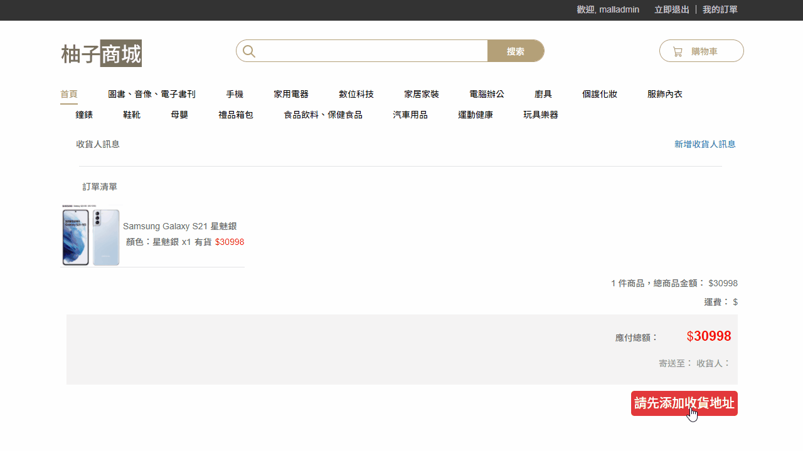
-
由於下訂單牽扯許多模組(如會員地址、計算運費、商品詳情、鎖定庫存、支付…等等)，這邊採用RabbitMQ來保證分散式交易的最終一致性
-
詳細可以參考筆記 https://yoziming.github.io/post/220205-gulimall-19
- 有連續三章的筆記都是在講這塊，關於MQ的最終一致性大部分是在這篇
- https://yoziming.github.io/post/220207-gulimall-21-delay-queue/
-
簡單來說因為有很多遠程調用，下單、庫存、支付、退貨又各自牽扯到許多種情況，任何一個環節都有可能失敗，所以使用RabbitMQ的消息對列在各子模組之間傳送訂單與庫存的訊息，例如: 下單後就要鎖定庫存，會把訂單與庫存工作單發到各自的隊列中，拖太久沒付錢的就會取消訂單，進入解鎖庫存階段
-
使用MQ的情況下，可以慢、可以遠程調用失敗、可以高併發，因為每個
Listener消費訊息前都是用try包住調用的方法，被調用的方法在本地大多還用@Transactional確保安全，並且再次查驗訂單或庫存的最新狀態，執行相應階段該做的動作 -
一切都正確無誤才
basicAck手動消費隊列中的訊息，若出問題就rollback回復資料庫中的狀態 +basicReject把消息重新放回隊列，也不擔心重複消費的問題，因為會查驗訂單或庫存的最新狀態
後台部分
- 這個就沒有實作了，理論上還要串流物流業者的API，台灣的話我看過綠界支付有提供相關的服務
- 這邊只能手動修改訂單狀態，例如改成已發貨並且假裝填一個物流的公司跟編號
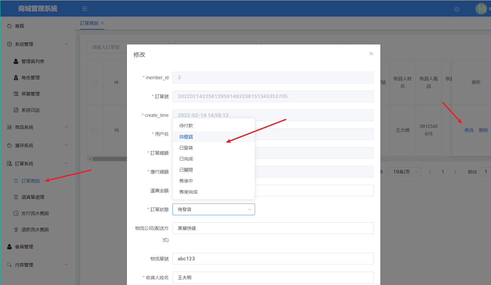
- 然後顧客端查看訂單詳情就可以選擇確認收貨，或是有問題要申請售後
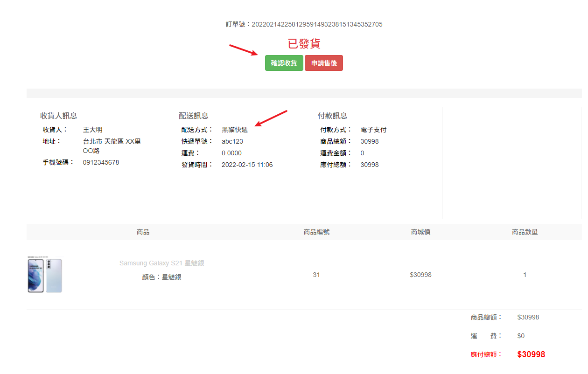
- 售後的部分，教學中串接的支付寶API有提供現成的退款template，也是暫時跳過
- 至此算是一個完整的流程
- 商戶: 設定商品屬性、展示訊息
- 用戶: 瀏覽廣告、搜尋商品、加入購物車、確認訂單、下訂單
- 平台: 管理商品庫存、上架、輪播廣告、訂單、支付與出貨
小結
- 目前正在嘗試將網站部署到AWS的EC2上面，但由於此項目十分龐雜，不像之前的javaweb只要一個tomcat與mySQL就能開起來
- 暫時的想法是java部分全部打包成dockerfile丟上去，並且試試看用traefik取代nginx，但還有許多技術難點要克服。先暫時擱置了，以後有能力再回來補完
上次修改於 2022-02-14